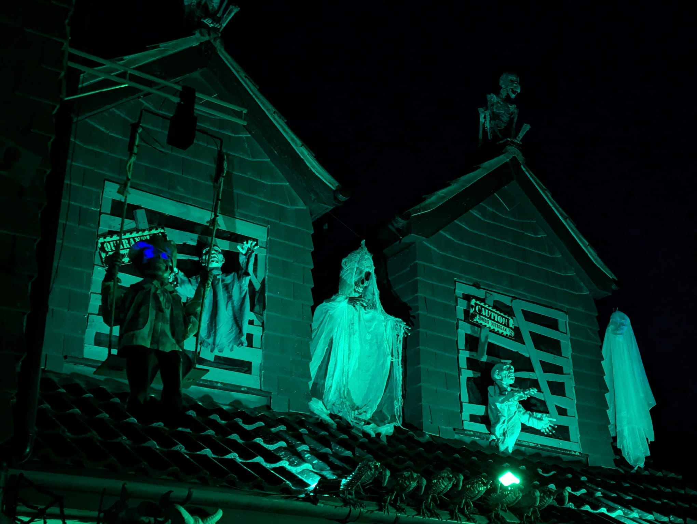
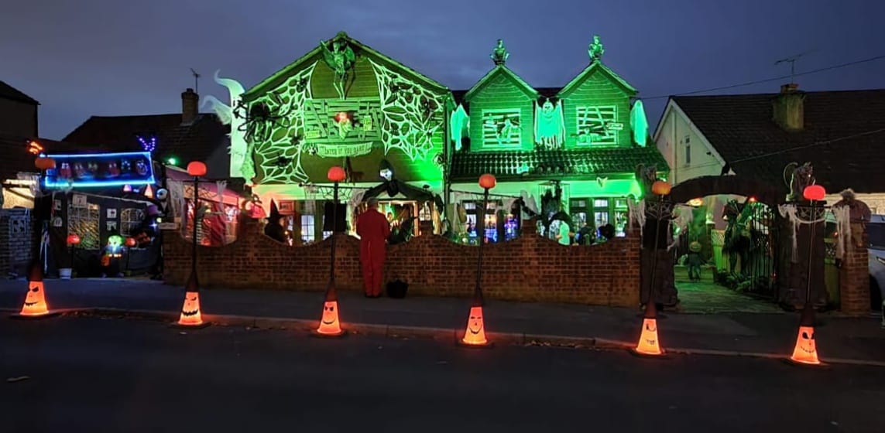
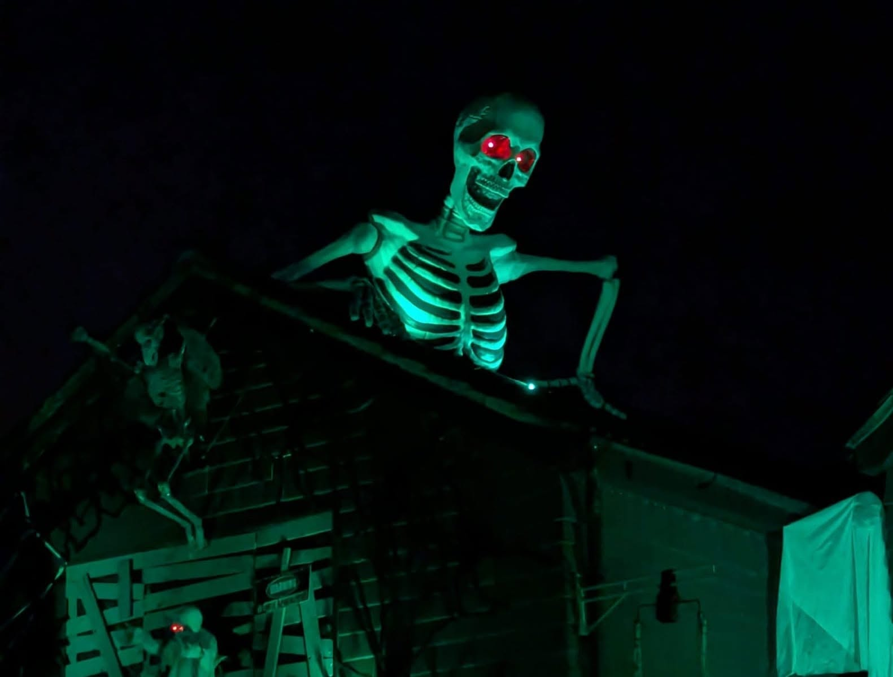

It Started
With A Party...
From a handful of homemade props in 2003 to a one-night community Halloween tradition.
A Party, A Storm And A Spider
PlantationVille did not begin as a haunted attraction. Back in 2003, it was simply a fancy dress costume party. We built a handful of Halloween props and, remarkably, a few survive to this day.
Others were not so fortunate. We left some outside overnight and a storm swept through. By morning several had been destroyed. We could have stopped there. Instead, we built more.
Then a regular trick-or-treater told us she returned every Halloween for one thing: a spider prop that dropped down and frightened her as she approached. That small comment changed everything. What if we created an experience for everyone who came to the door?

The Manor Awakens
Halloween gradually crept out of the house and into the garden. We built, experimented, got things wrong, rebuilt them and kept finding something new we simply had to add.
In 2016 we bought our first full-size animatronic. What started with homemade party props was becoming something much bigger.
Today the Manor exists for one night each year. It is raised from the depths for Halloween, then dismantled almost as quickly as it appeared. There are no tickets and no admission charge.

The Screams Are Only Half The Story
You do not need an expensive costume. In fact, you do not need a costume at all. Children, teenagers, parents, neighbours and adults are all welcome.
For younger children we created Baby Boo, a gentler way to enjoy the magic of Halloween. At the other end of the age scale, local care homes bring residents along too. Seeing someone in their eighties laughing and giggling like a child again is rather special.
We love the screams, but it is really the laughter, smiles and memories that keep us doing it.


Scaring For Something Good
PlantationVille is entirely self-funded. Each Halloween we also use the attention the Manor receives to support a different children's charity.
Last Halloween, close to 1,000 children came through our gates and very nearly demolished 100 tubs of sweets. We could not keep them supplied without the neighbours and local businesses who help top the tubs up.
The Manor is built and run by our Boo Crew, with the next generation already learning the ropes.

It Is About The People
The children working up the courage to enter. Parents laughing behind them. Teenagers insisting they were not scared. Neighbours returning every year. Care-home residents giggling at the scares. Familiar faces and people discovering PlantationVille for the first time.
More than twenty years after that first fancy dress party, that is what keeps us building.
For one house.
For one night.
Once a year.
Thank you for being part of our story.
We'll see you when the Manor awakens.
The Boo Crew